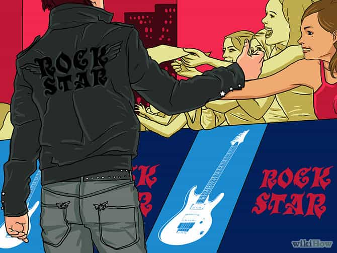

James Russell is an English economist, part-time musician and keen scholar of night, day, and internet game.


There’s little doubt about it: being a musician and playing in a band can be a very effective way of getting some serious ass. However, before I elaborate on methods and tactics, I feel obliged to offer a couple of disclaimers.
First, bear in mind that unless you are legitimately a famous musician (which I’m going to assume you’re not), being in a band is no substitute for having game—girls will rarely approach you proactively. Second, making music takes time and effort. If you dedicated all the time it takes to write songs, rehearse, book gigs and haul your equipment around to just aggressively approaching girls, I imagine your notch count would probably be higher (providing a basic level of social skill). However, if playing music is something you enjoy doing, you’d be a fool not to take advantage of the obvious benefits.
So how does being a budding rock star get you laid? First, there are the indirect benefits: being able to drop casually into conversation that you’re a musician, or having strategically placed Facebook photos of you on stage in front of hordes of screaming fans can never herald bad things for your social value.
However, what I’m going to focus on here how to meet women directly through playing in a band. So, without further ado, let’s examine the key actions that will lead to maximum copulation.

It’s unfortunate but true, making music counts for nothing unless you actually play live. Sorry if you’re a talented bedroom producer, but it’s the physical act of getting up on stage and laying your ass on the line in front of a crowd that gets panties wet, not the actual quality of the music. On the plus side, this means that your band doesn’t actually have to be that great, as long as you’re not conspicuously awful and you have a bit of a stage presence.
It’s pretty obvious to most people that the singer is, by default, the most desirable member of the band. After all, they’re the most visible on stage, generally viewed as the leader (or alpha male, if you like) of the group, and are demonstrating they have the balls to lay bare their soul to a bunch of strangers.
If you’re not the singer, singing some backing vocals can raise your profile, or just generally being active onstage; it’s all about just making sure you’re visible rather than lurking at the back where nobody even knows you exist. The worst thing you can do is to be in a band with a female singer, as it makes you look like a chronic beta. Blondie might have some great tunes, but how often do you think the guys who weren’t Debbie Harry got laid??
I have absolutely nothing against metalheads, but it’s generally true that the crowd at metal gigs tends to be an overwhelming sausage fest. Unless you’re looking to pull a hairy guy in black, consider another genre.
Not what you want
True, there’s more prestige associated with being the last guys on, but consider what generally happens after the gig is over. That’s right: the lights go on and everyone goes home, meaning all the social value you just displayed from being onstage has gone to waste. Middle of the bill is pretty much perfect: there are enough fans of other bands around to observe you in all your glory, and enough time to work the audience after you’ve finished.
As stated at the outset, this part is absolutely vital. It’s all too tempting after your set is over to sit back, grab a well-earned beer and relax in a quiet corner. However, this is essentially akin to buying a winning lottery ticket, and then forgetting to go and collect your winnings. You’ve done the hard work, now it’s time to reap the rewards.
The great thing about approaching at gigs is that it doesn’t feel like a cold approach: you’ve just demonstrated large amounts of social value, and everybody there has some kind of common connection. You can ask women which band they’re there to see, what they thought of your set, if the sounds levels were okay from where they were standing…just use your imagination!
If you’re struggling, make a mailing list for your band and go around after the gig asking if people would like to sign up. It sounds cheesy but it’s relatively rare for people to decline to your face. Boom! You have an instant excuse to talk to any girl of your choosing in the room.
I’m not going to elaborate on the fundamentals of good general game here, but I will say one thing: avoid talking about your regular job or mundane day-to-day life at length. Girls who go to gigs get off on the idea of the rock star lifestyle, don’t chode yourself out by wrecking the image that you’ve just built up.

So, to conclude, playing in a band is not a magic bullet that will get you laid like a trooper without ever having to run the risk of rejection. In modern society, learning game as a man is absolutely unavoidable if you want to maintain a steady stream of sex.
However, compared with golf, poker or video games, playing live music is a hobby which is highly conducive to meeting members of the opposite sex. Even if it never gets you laid once, gaining the nads to stand in front of a room full of strangers and openly express yourself can never be a bad thing in your development as a man.
Read More: 10 Signs A Bar Will Get You Laid